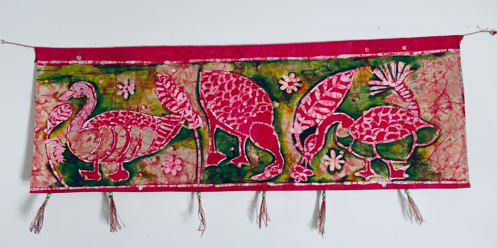
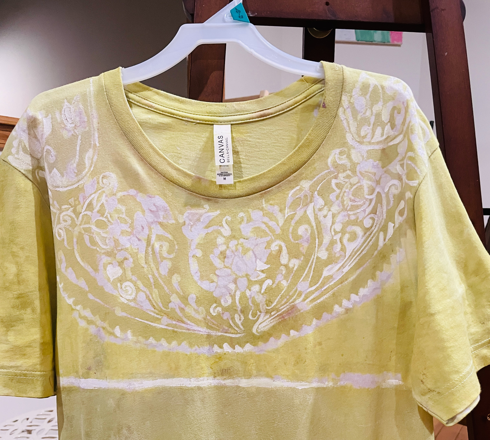
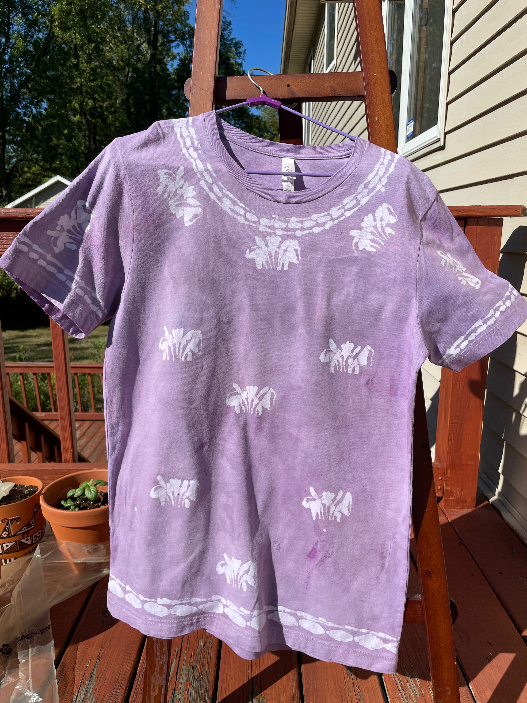

Batik Tapestry and T-shirt Designs

This tapestry is inspired by a design found on a terracotta plaque used to embellish
the walls of the Madan Mohan temple in Bishnupur, West Bengal, India.
Historical evidence suggests, this temple was constructed by Durjan Singha in 1694 CE.
It has been declared a national monument in India.
While the original panel depicts a mother with her chicks, the tapestry studies the form
of Canada geese, commonly seen in the Western New York. The artist was inspired to study
how geese gathered together in large groups, cackled, and dug for worms in the mud.
The batik technique is believed to have originated in South Asia, wherein a wax resist is used
to prevent color from seeping into certain portions of the fabric, while allowing others to get dyed.
The use of bright colors is common, as is the use of vegetable dyes such as turmeric, indigo, and others.

Application of the wax resist on a design drawn on a white T-shirt.

After dyeing with synthetic colours.
This work is inspired by a design created by Jamuna Sen, the daughter of Nandalal Bose, the pioneer of
modern Indian art and former principal of Kala Bhavan, Santiniketan, appointed by Rabindranath Tagore.
Jamuna Sen and her elder sister Gouri Bhanja, along with other talented artists like
Rani Chanda, Haimanty Chakravarty, and Bani Bose co-created a legacy that became
synonymous with the Santiniketan style of batik.
A Wikipedia article (https://en.wikipedia.org/wiki/Jamuna_Sen) mentions:
Pratima Devi, Rabindranath Tagore's daughter-in-law, had learnt the techniques of Batik in
Paris from a French artist, and in 1923, brought this knowledge as well as some Batik instruments
to Santiniketan. With the help of the French artist Andrée Karpèles, she started a small workshop to
explore this technique further. Later Silpa Bhavana (precursor of the current Silpa Sadana)
would develop this practice on a larger scale. It is in this venture that Jamuna, along with her sister
Gouri would come to play a key role.

The design on this T-shirt is inspired by the common motif of a lotus and water plants found in the Ajanta cave-paintings.
The artist used a simplified version of this design in a repetitive pattern.